FUTBOL.
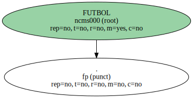El equipo de Rubio no pasó del empate ante el Eibar en el inicio de la Liga de Segunda División.
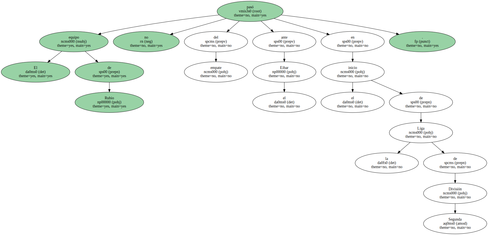El vasco Alonso estrelló el balón en el larguero a falta de un minuto para el final del encuentro.
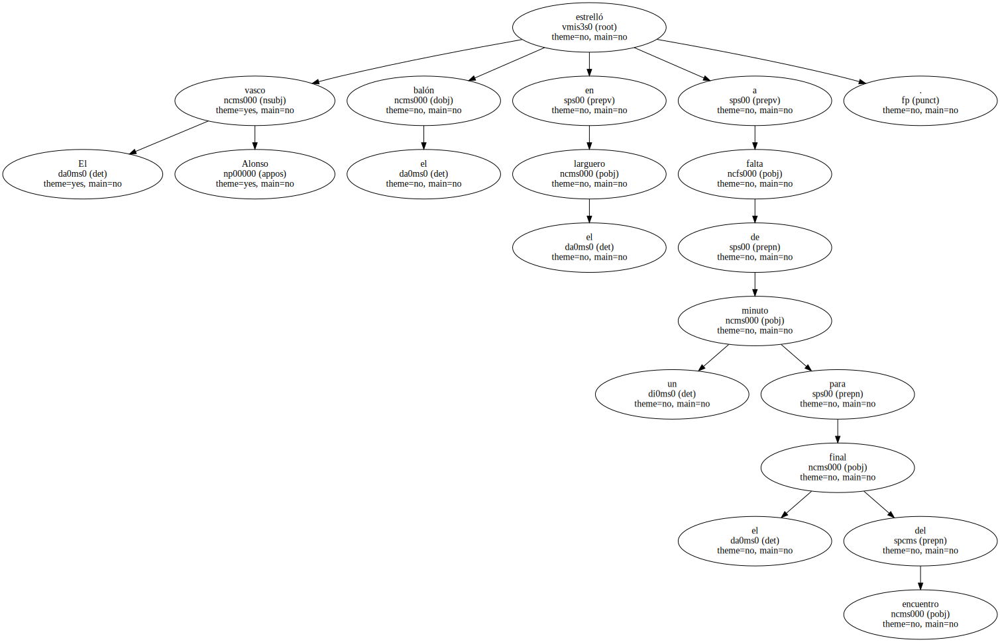LLEIDA.
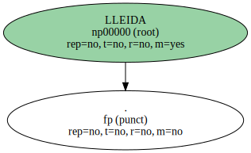El Lleida no pasó del aprobado por los pelos en el inicio de la Liga frente al Eibar ( 0-0 ).
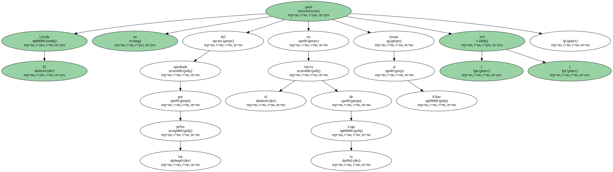Empezó con un juego alegre ante el habitual juego primario y defensivo del conjunto vasco , pero se fue diluyendo a medida que avanzaba el partido.
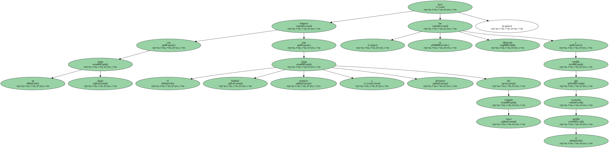Su dominio en la primera parte careció del acierto del gol , especialmente porque el Eibar apenas dejó resquicios defensivos.
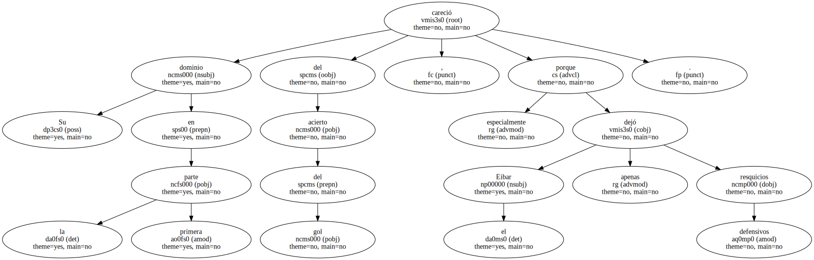" Queríamos ganar , pero hemos tenido un rival complicado " , explicó Miguel Rubio , que no tuvo el debut deseado como entrenador del Lleida.
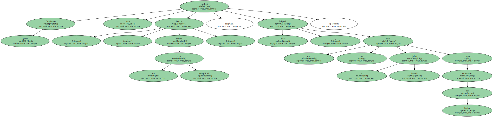En el Camp d'Esports se enfrentaron ayer dos equipos profundamente renovados , aunque mantuvieron sus signos de identidad , especialmente el Eibar.
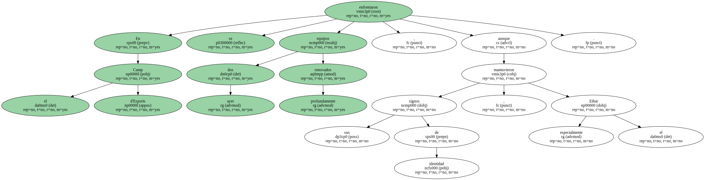El Lleida ha fichado a 14 jugadores y el conjunto vasco a 11.

Nada que ver con las plantillas que tenían la temporada pasada.
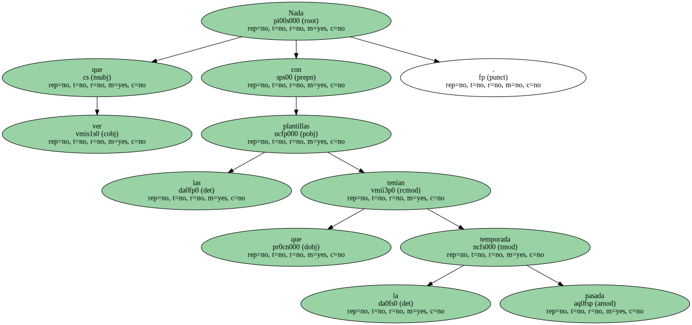En el equipo titular del Lleida los únicos supervivientes de la pasada campaña eran Simeón , Busquets , Javi García y Vlademir.
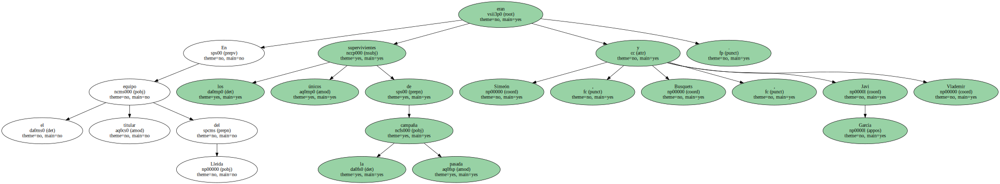En el Eibar ocurre otro tanto de lo mismo , pero el conjunto de Blas Ziarreta continúa fiel al mismo estilo de juego en sus desplazamientos.
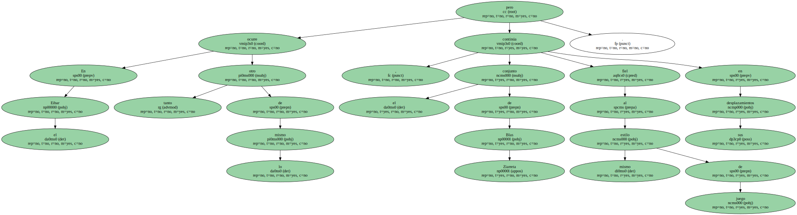Es decir , encerrarse en su zona del campo para proteger la portería , ceder la posesión del balón al contrario y esperar algún contragolpe o una falta para ver si podía conseguir algo más que el empate.
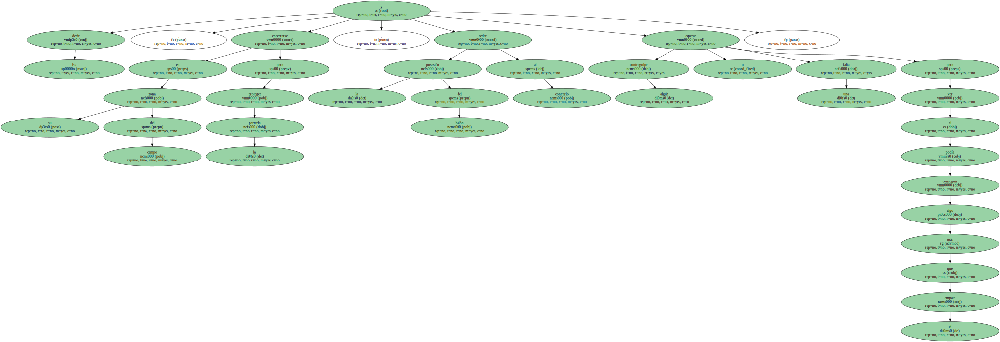Así las cosas , el Lleida , efectivamente , tuvo el balón en su poder , trianguló y realizó mil y un intentos para ganar el partido , pero la realidad es que dispuso de muy pocas ocasiones de gol.
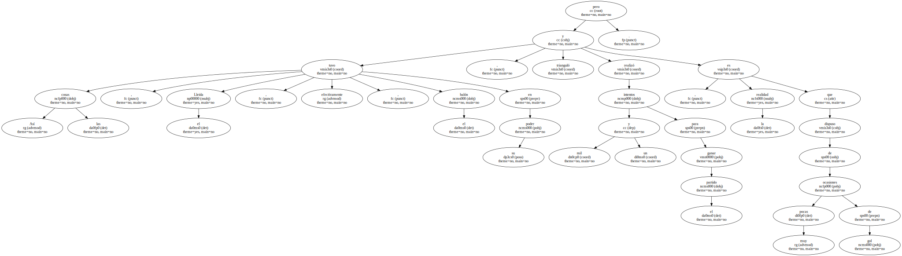La única en la primera parte vino precedida de un medido centro de Padín , que Julien cabeceó defectuosamente y mandó el balón fuera ( m.14 ).
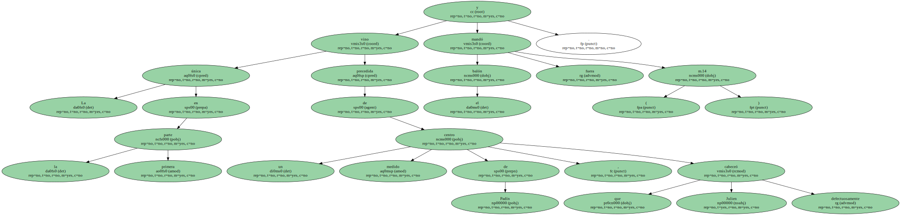La primera buena ocasión del Eibar no llegó hasta la segunda parte.
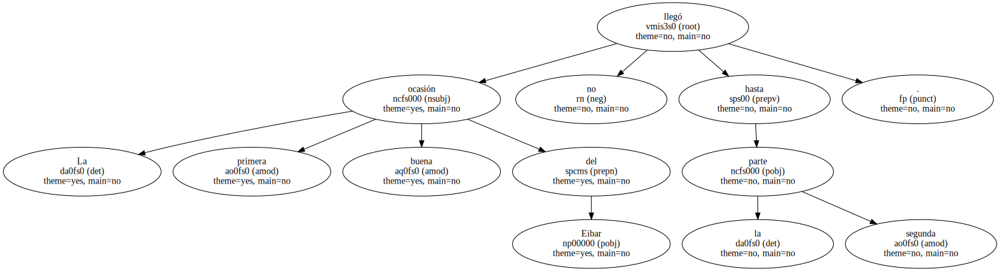Fue un lanzamiento de falta a cargo de Alonso , pero Busquets estuvo ágil para desviar el balón ( m.65 ).
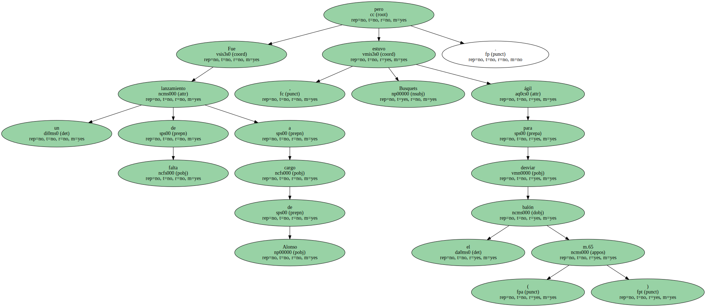Reacción de los vascos.
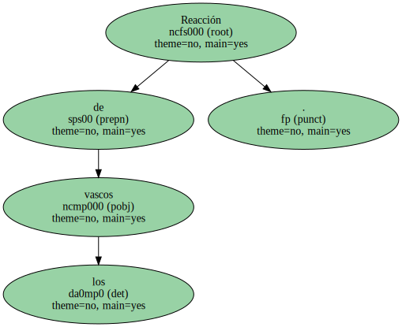El Lleida intentó apretar el acelerador tras el descanso , pero le fallaron las fuerzas y , además , se encontró entonces con un Eibar más ambicioso.
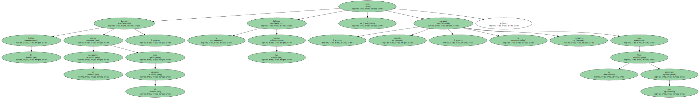Nada del otro mundo , pero además de la mencionada falta de Alonso , el mismo jugador pudo aguar del todo la fiesta en Lleida.
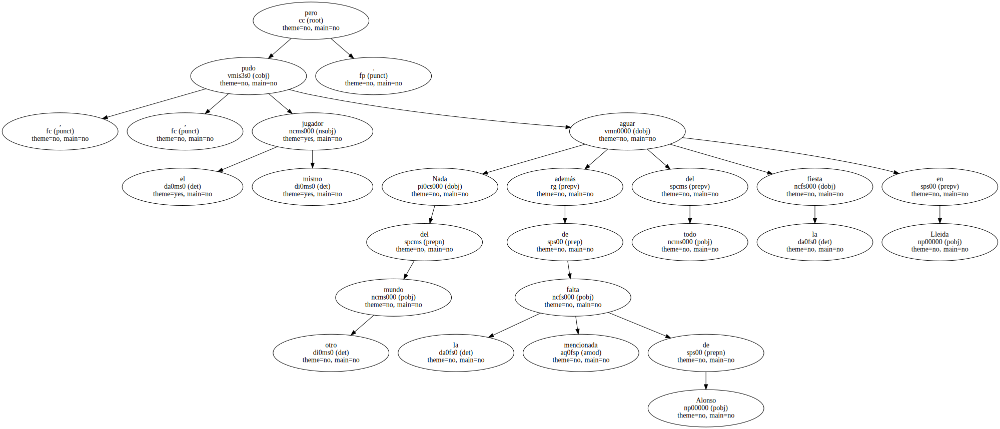A falta de un minuto para el final del partido , un disparo lejano del centrocampista vasco superó a Busquets y se estrelló en el larguero.
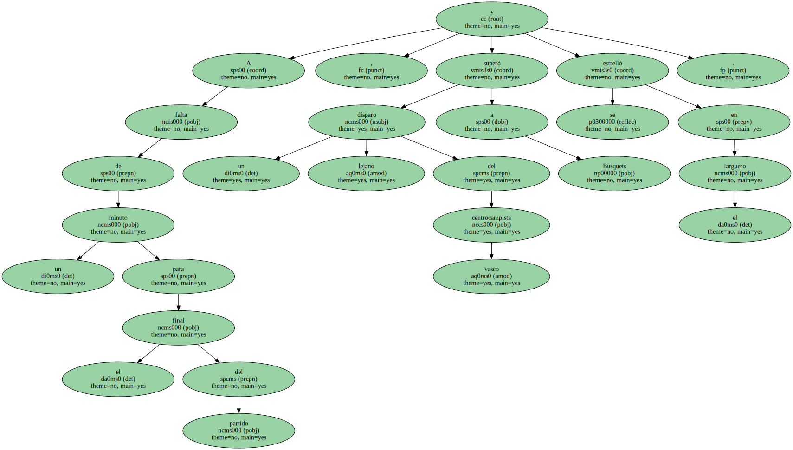Los pocos aficionados que se dieron cita en el Camp d'Esports se llevaron un susto de muerte y , al final , el empate supo mejor de lo que cabía esperar.
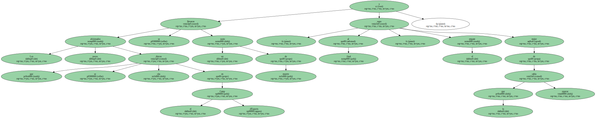" El equipo ha intentado crear dificultades con cambios de juego y balones largos , pero el trabajo defensivo del Eibar ha sido bueno " , explicó Rubio.
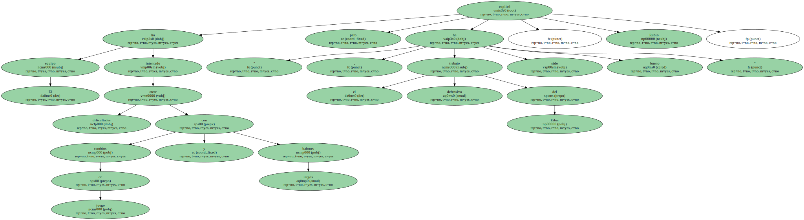El entrenador del Lleida reconoció que su equipo estuvo mejor en la primera parte que en la segunda , pero no insistió en buscar responsabilidades.
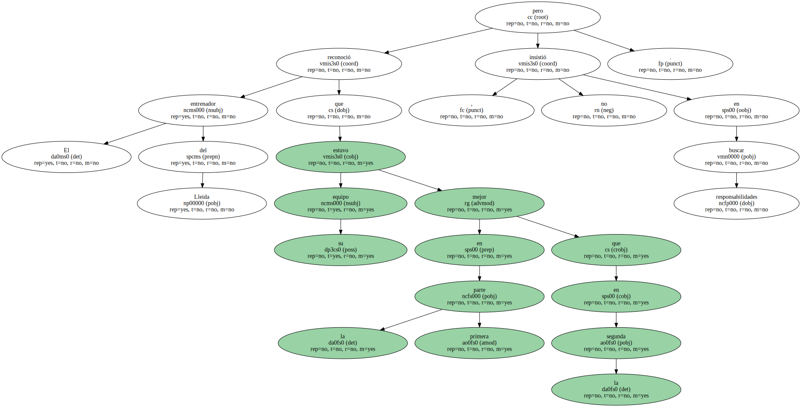" Habrá que ganar en Murcia " , señaló con el deseo de subsanar en el próximo desplazamiento el primer tropiezo en la Liga.
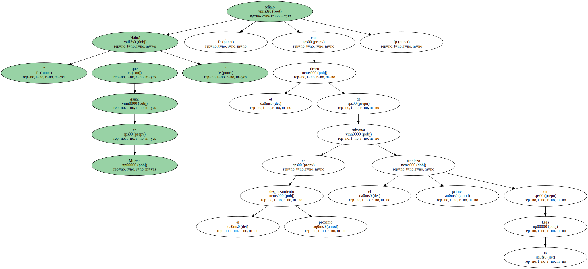Los dos entrenadores coincidieron en la justicia del resultado.
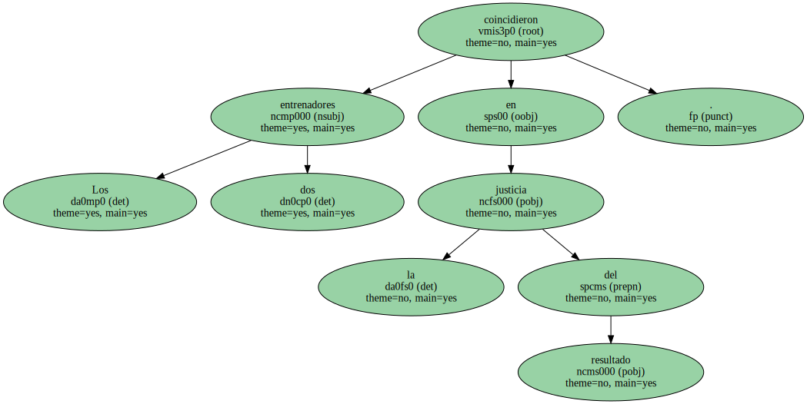Blas Ziarreta explicó que " no perder fuera de casa es bueno " , mientras que Rubio lamentó que les faltó " claridad en la segunda parte ".
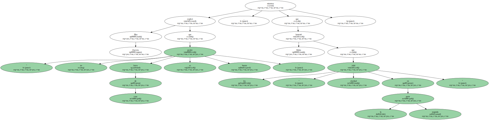" Lo mejor ha sido la actitud y lo peor falta de profundidad " , añadió.
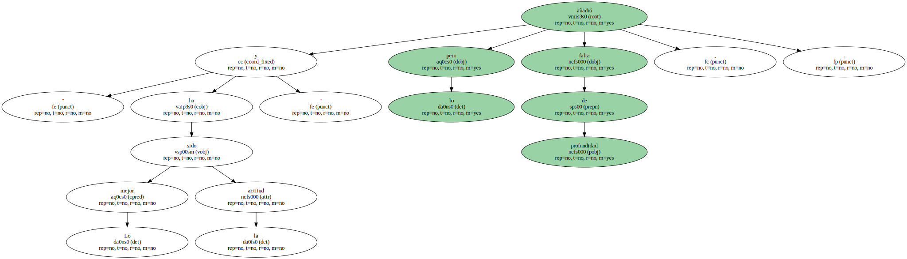